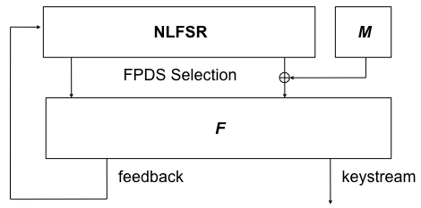

Dragon is a stream cipher developed at the Australian Queensland University of Technology (QUT). Dragon was a candidate for the eSTREAM project. The version selected for eSTREAM phase 3 is Dragon-128. Dragon is not patented.
Dragon was developed by the Information Security Institute (ISI) at the QUT in Brisbane, Australia. It is a stream cipher, based on a nonlinear feedback shift register and a nonlinear filter function with memory. This state is initialized with 128- or 256-bit key-IV pairs. Each clock ("round") produces 64 bits of keystream, using simple operations on 32-bit words. Rounds can be performed repeatedly to generate an infinite stream of pseudorandom data.
Dragon operates in two distinct phases (stages). The initialization stage takes the keying material (128-bit or 256-bit key and IV) and translates it into a complete internal state (1024 bit, plus 64 bit of memory/counter). The keystream generation stage produces 64 bit of the keystream per round of operation.
Both stages utilize the 'update function' F, which uses three 'G' functions (G1, G2, and G3) and three 'H' functions (H1, H2, and H3). Each of the G and H functions index into two selected 8x32-bit S-boxes. The sequential operation of F is depicted in the following picture:

The initialization stage is performed at the initial keying of the cipher, and on every rekeying of the cipher. For security reasons, it is recommended to replace the key and rekey and reinitialize the cipher after every generation of 2^64 bit of keystream. Initialization consists of particular concatenation of the key and IV to produce the initial 1024-bit state (as well as the 64-bit memory/counter value), followed by 16 iterations of the F function. The following pseudo code shows the full initialization procedure:

Once the cipher has been initialized, keystream generation translates the non-linear feedback shift register (NLFSR), as well as the memory/counter value, into 64 bit of keystream and some 'feedback' information that mutates the NLFSR state. The 1024-bit NLFSR is split into thirty-two 32-bit words, labelled B0 through B31. This keystream generation process is depicted as follows:

The Dragon cipher has not yet been proven to be insecure. Some attacks, such as a distinguishing attack, have been raised and subsequently dismissed. So it can arguably be considered being secure enough to protect sensitive data. It is fast in both hardware and software, with a 3.2GHz Pentium 4 processor capable of calculating 3.8 Gbps of keystream, and a hardware implementation using a Samsung ASIC capable of calculating 23 Gbps of keystream.
The design paper [1], written by several members of the ISI, is basis for the ideas and figures used in this document. A complete implementation of the cipher in C as well as further information regarding Dragon, can be obtained from the eSTREAM Phase 3 website. The former ISI website at http://www.isi.qut.edu.au/resources/dragon/ is no more accessible. More recent publications can be found in the reference section.